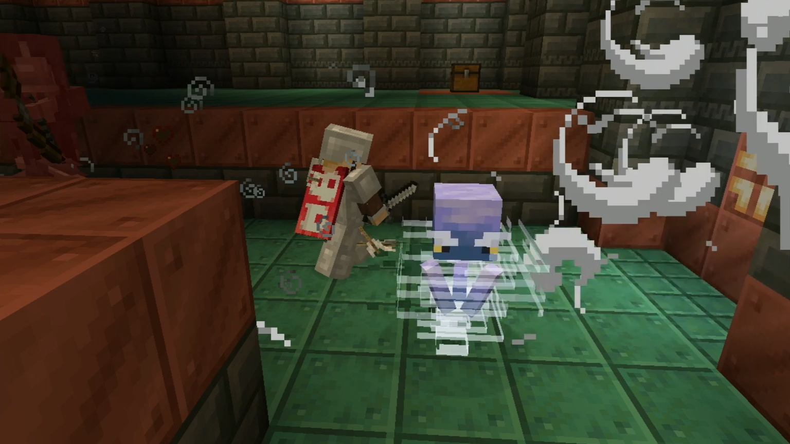

Minecraft 1.21: release date, new mobs, blocks, structures, and more

The Minecraft 1.21 update was first announced on Oct. 25, 2023, and since then, many planned features for it have been shared. A massive amount of fresh content is being added, so there’s a lot to look forward to.
On April 26, Mojang officially gave the 1.21 update a title: the Tricky Trials update, signaling how substantial the update is compared to previous ones. If you want to know about what this update has to offer ahead of its official arrival, then here is everything included in the Minecraft 1.21 update.
All Minecraft 1.21 features
Minecraft 1.21 release date
There is no official release date for the Minecraft 1.21 update just yet, but based on past update patterns, it’ll probably be released sometime around mid-2024. The 1.20 update launched on June 7, 2023, so there’s a good chance the 1.21 update could launch sometime in the summer, too.
Minecraft 1.21 wolf variants
From the 1.21 update onward, the wolf mob will no longer be just a plain white wolf, as there will be a total of nine wolf variants. Each of the nine wolves is tied to specific biomes and can only be found by traveling to the right locations.
- Rusty Wolf
- Regular Wolf/Pale Wolf
- Black Wolf
- Striped Wolf
- Snowy Wolf
- Ashen Wolf
- Woods Wolf
- Spotted Wolf
- Chestnut Wolf
Minecraft 1.21 wolf armour
Alongside the arrival of wolf variants, wolves are also getting an upgrade with wolf armor. All wolf armor can be crafted using scutes from Armadillo, which is another mob arriving in this update.
Wolf armor is both functional and stylish for your furry friends as it absorbs all damage from enemy attacks until it breaks. You can dye the armor any color you desire and patch it up as needed using Armadillo scutes.
Minecraft 1.21 Armadillo
The winner of the 2023 Minecraft mob vote was the Armadillo, so this fan-voted mob will officially arrive with the 1.21 update. Despite a lot of upset and a mob vote petition leading up to the vote, the Armadillo ended up winning even though over 500,000 players didn’t want it.
This passive mob can be found in the badlands and savanna biomes. They curl up into a ball and roll around to avoid danger. The only resource associated with them is Armadillo scutes which drop from them naturally over time but can also be manually harvested by brushing them.
Minecraft 1.21 Crafter block
The Crafter block is an advanced tool that automates crafting using Redstone. This makes it so you can craft the items you’re after a lot quicker and without manually having to place the items you need.
The crafter can be made with two redstone dust, five iron ingots, one dropper, and one crafting table. It can be connected to a chest to farm crafter items into storage rather than just dumping them on the ground.
Minecraft 1.21 trial chambers
A new structure called trial chambers will become a part of all procedurally generated worlds in Minecraft. Trial chambers are underground constructions that provide a decently tough combat challenge you can navigate through to earn some rewards.
In trial chambers, you can find trial spawners, vaults, different mob types, resources, and an array of different block types.
Minecraft 1.21 trial spawner
Trial spawners are variants of the regular mob spawner only found in trial chambers. They steadily release fresh mobs in waves and change the amount of hostile foes that are present depending on how many players are in the trial.
When all the waves have been defeated, the trial spawner drops an array of rewards before becoming inactive for 30 minutes. Rewards dropped by this block include items like trial keys, ender pearls, emeralds, and potions.
Minecraft 1.21 vault
The vault block is exclusively found in trial chambers and acts as a special kind of treasure chest. You can only access it using a trial key, which is earned from trial spawners. Vaults have a wide array of powerful loot you can collect, including items like enchanted books, diamond armor, saddles, emeralds, and diamonds. Rather than chests, which have a loot pool shared amongst all players, each player has access to their own loot in a vault, provided they have a trial key.
Minecraft 1.21 copper block variants
Trial chambers are mostly made of copper, so you can find all kinds of new copper block variants throughout them. This includes blocks like chiseled copper, copper trapdoors, copper bulbs, and copper doors.
Minecraft 1.21 Breeze
The Breeze is a hostile mob found in trial chambers. It’s sort of the opposite of the Blaze mob you find in the Nether, as it’s a wind-based flying opponent. Breeze fire explosive and highly dangerous wind charges at you, so avoiding their attacks is key.
Breezes will drop breeze rods, which in turn can be crafted into wind charges, which you can use to harness the same wind blast attacks yourself.
Minecraft 1.21 Blogged
The Bogged mob is basically just a mossy variant of the Skeleton. This hostile enemy can be found in trial chambers, swamps, and mangrove swamps. The big difference between this mob and the regular Skeleton outside of appearance is that Bogged wield bows with poison arrows, which makes them a whole lot more deadly. Bogged, like other skeletons, will catch on fire in the sunlight and won’t spawn above ground during the day.
Although it might be a while before you can officially play the Minecraft 1.21 update, you can test out most of the features ahead of time by loading up a snapshot preview. All of the features are still under development, so you might run into some bugs and issues, but snapshots are still a great way to see what’s coming in the future.